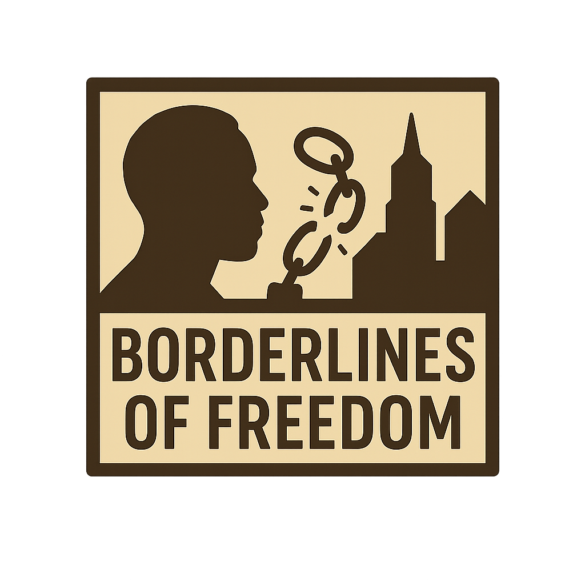

 Borderlines of Freedom:
The Story of Slavery and Resistance in Kansas City
Kansas City’s story is one of contradictions. A city that straddled the line between slavery and freedom, progress and pain. Borderlines of Freedom: The Story of Slavery and Resistance in Kansas City examines the city’s early years along the Missouri–Kansas border, where enslaved people built homes, tended farms, and shaped a growing frontier while freedom seekers crossed the river under threat of capture. Through historical sites, archival images, and firsthand accounts, the film traces how the violent struggle known as Bleeding Kansas transformed this region into a moral battleground. Today, Kansas City’s skyline stands over the same ground where those battles for freedom once played out, reminding us that the past is not erased—it’s but instead it is embedded in the foundation of the city itself.
The legacy of slavery in Kansas City is a story of endurance and transformation. Beneath the city’s progress lies the memory of those who were denied freedom yet helped build the foundation for generations to come. Their labor, courage, and quiet acts of resistance shaped both sides of the Missouri River long before the skyline rose above it. Understanding this history brings the city’s contradictions into focus—how a place once divided by bondage became a symbol of resilience and renewal. Remembering these lives isn’t just about the past; it’s about recognizing how their struggles continue to echo through the streets, the neighborhoods, and the shared history of Kansas City today.